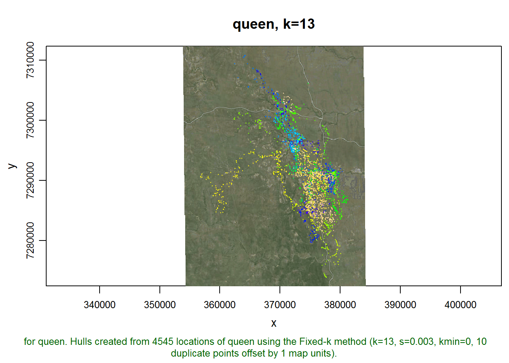
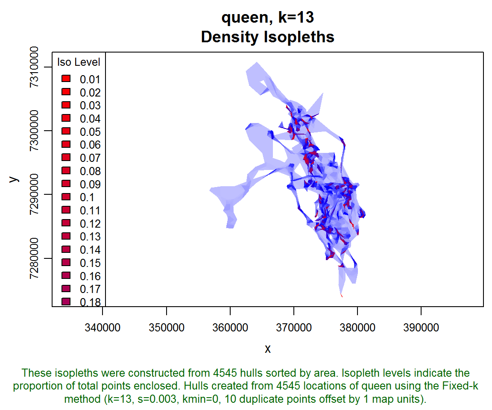
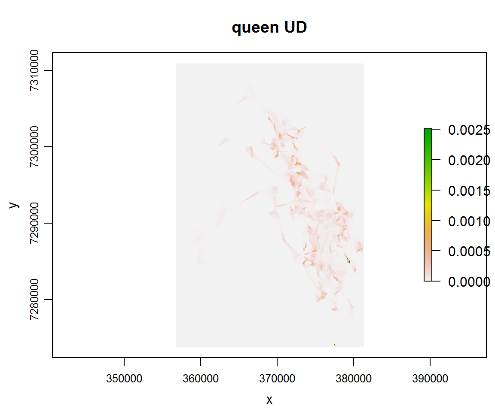
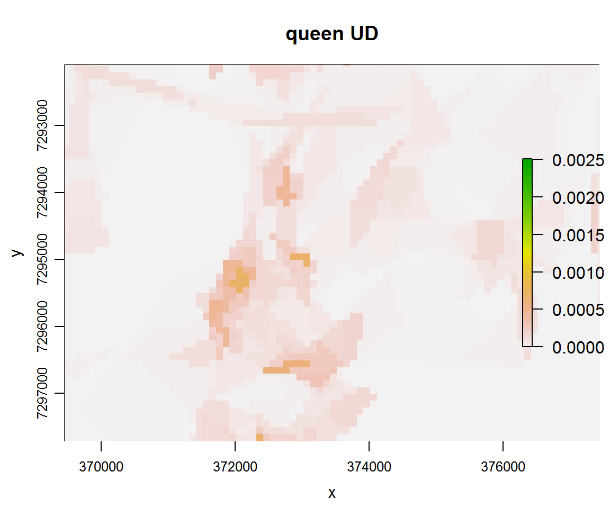

This tip demonstrates how to rasterize isopleths to approximate a continuous UD (comparable to what a raster UD estimation method like KDE would generate).
Load packages.
require(raster)## Loading required package: raster
## Loading required package: sprequire(tlocoh)## Loading required package: tlocoh
## T-LoCoH for R (version 1.37.00)
## URL: http://tlocoh.r-forge.r-project.org/
## Bug reports: tlocoh@gmail.comrequire(tlocoh.dev)## Loading required package: tlocoh.dev
## Loading required package: shiny
## tlocoh.dev provides features under development for T-LoCoH
## Version 1.31.0
## URL: http://tlocoh.r-forge.r-project.org/
## Please send bug reports and feedback to tlocoh@gmail.comFirst we load a dataset for ‘queen’, a buffalo in Kruger NP in South Africa.
mycon <- url("http://tlocoh.r-forge.r-project.org/queen.n4545.s0.003.k13.lhs.01.RData")
load(mycon); close(mycon)
plot(queen.lhs, allpts=T, gmap="hybrid", cex.allpts=0.2)## Downloading common background image...Done
Next we create isopleths. We’ll create isopleths for 100 levels, so that the result UD will be approximately continuous.
queen.lhs <- lhs.iso.add(queen.lhs, iso.levels=1:100/100, status=FALSE)## Loading required namespace: gpclibplot(queen.lhs, iso=T)
Next we create rasterized version of the isopleths, and verify that the cell values sum to one.
queen.lhs <- lhs.iso.rast(queen.lhs, cell.size=100, status=FALSE)Verify the cell values sum to one.
r <- queen.lhs[[1]]$isos[[1]]$rast
r## class : RasterLayer
## dimensions : 371, 246, 91266 (nrow, ncol, ncell)
## resolution : 100, 100 (x, y)
## extent : 356700, 381300, 7273800, 7310900 (xmin, xmax, ymin, ymax)
## coord. ref. : +proj=utm +south +zone=36 +ellps=WGS84
## data source : in memory
## names : layer
## values : 0, 0.002508251 (min, max)sum(getValues(r))## [1] 1Plot it.
plot(queen.lhs, rast=T, iso.legend=FALSE, desc=0, title="queen UD")
Zoom in a bit.
plot(queen.lhs, rast=T, iso.legend=FALSE, xlim=c(370300,376600), ylim=c(7297500,7292300), desc=0, title="queen UD")
From here, we could use the raster as input into any function that takes a raster based UD (e.g., VI or UDOI).